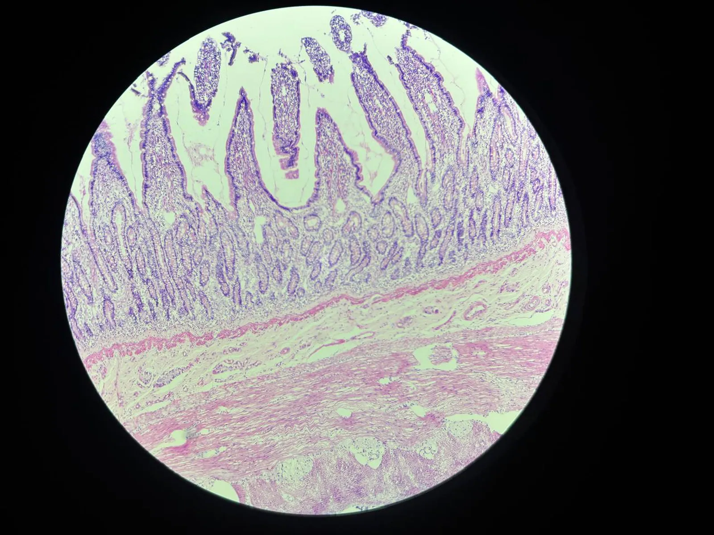
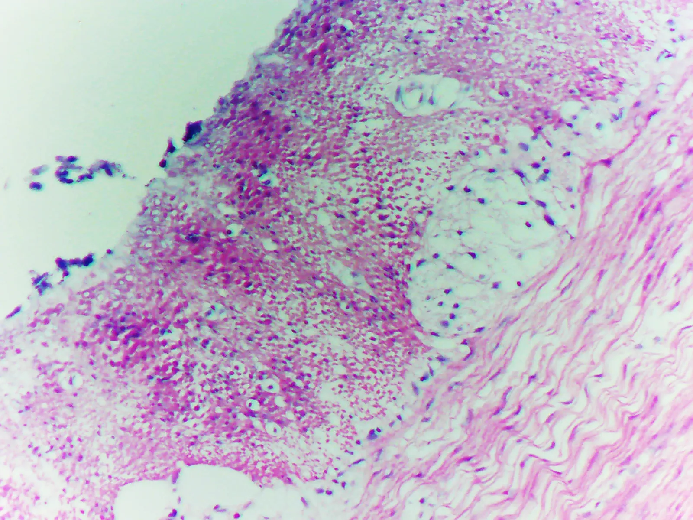

Lâmina 01 · Sistema digestório
Intestino delgado


Toque na imagem para ampliar. No computador, use as setas do teclado para trocar de imagem.
Lâmina 01 · Sistema digestório


Toque na imagem para ampliar. No computador, use as setas do teclado para trocar de imagem.